那些死過人的樹，都被做成衛生紙 ：羅硯澤 創作個展The Trees That Witnessed Death, Now Softened Into Tissue Paper: LUO Yan-Ze Solo Exhibition
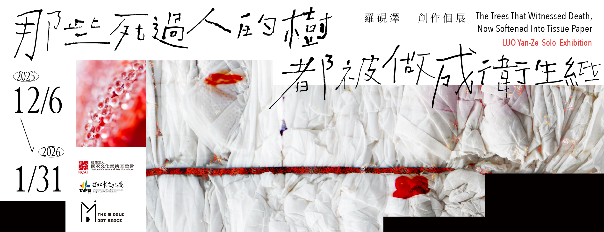
INFO
- 參展藝術家Participating Artists
- 羅硯澤
- 策展人Curatorial Team
- 陳念庭
- 展出地點Venue
- 米豆藝術空間
- 展覽時間Exhibition Period
- 2025/3/28 - 2025/5/25
- 主辦單位Exhibition Period
- 米豆藝術空間
- 贊助單位Exhibition Period
- 財團法人國家文化藝術基金會、台北市文化局
INTRODUCE
本計畫的起點源自於波蘭比亞維斯托克（Białystok）亞森諾美術館（Arsenal Gallery）的策展研究邀約，在長期的合作與研究過程中，我們從原本的陌生慢慢彼此熟悉，共同思考臺灣與波蘭甚至是整個東歐地區的相似與相異之處，以及該如何將這些感受傳遞給波蘭的觀眾。
Works
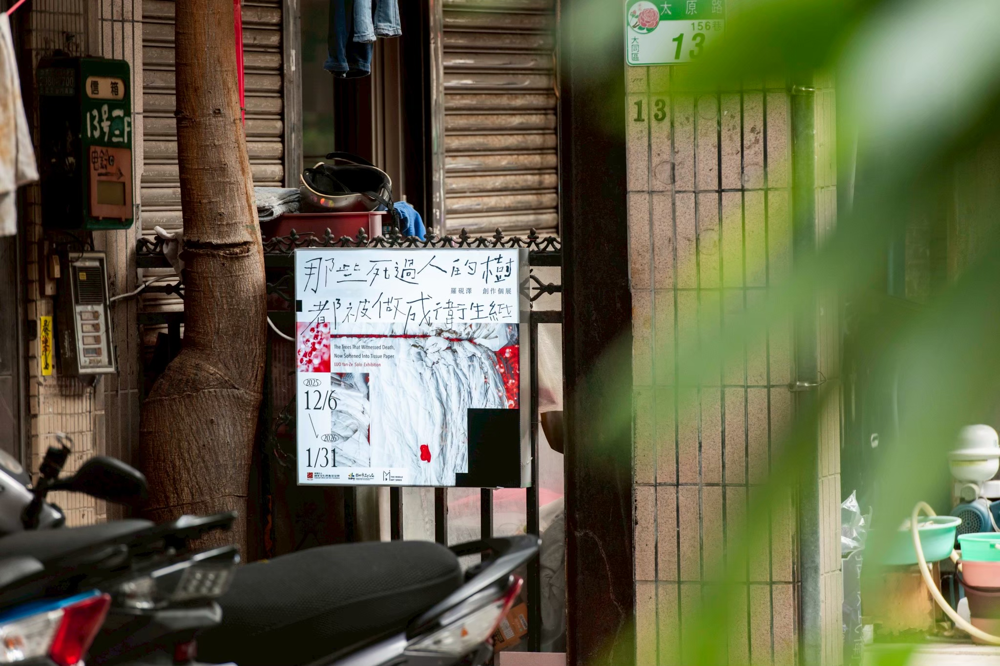
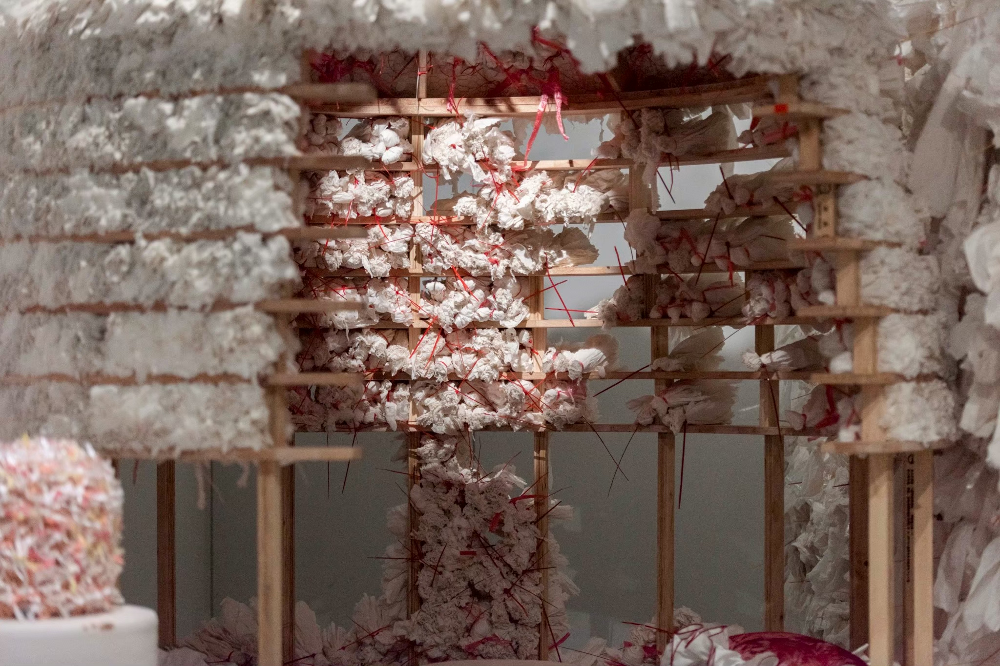
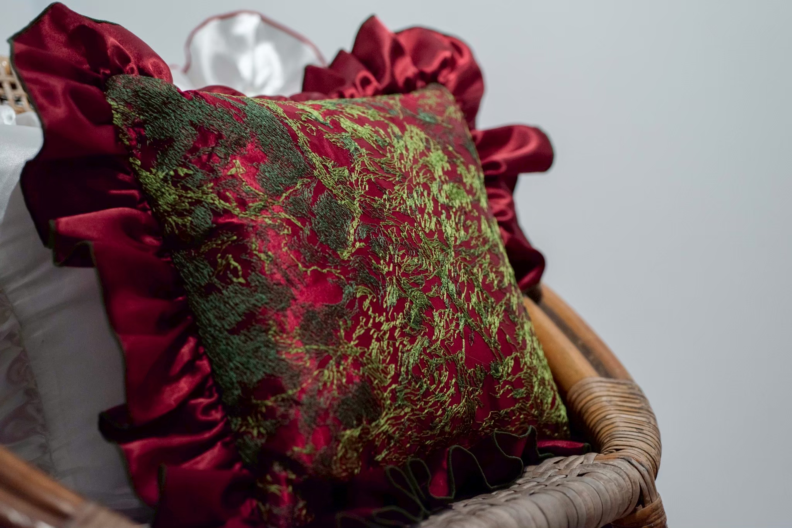
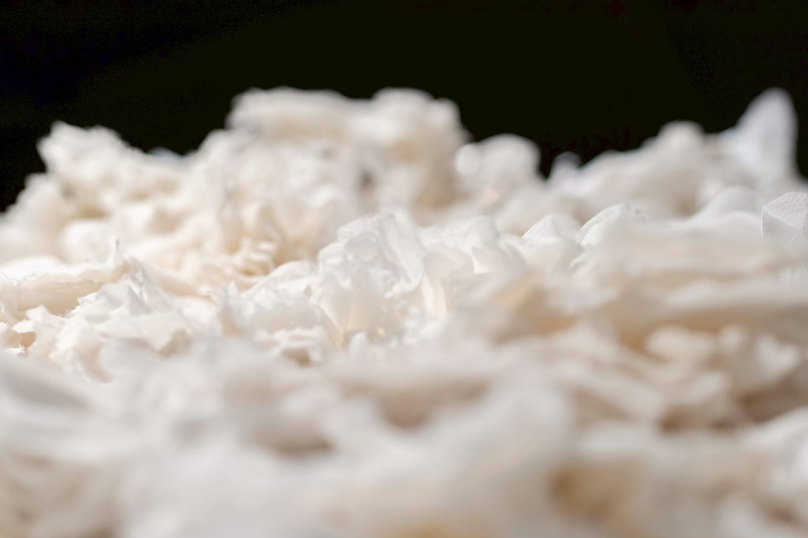
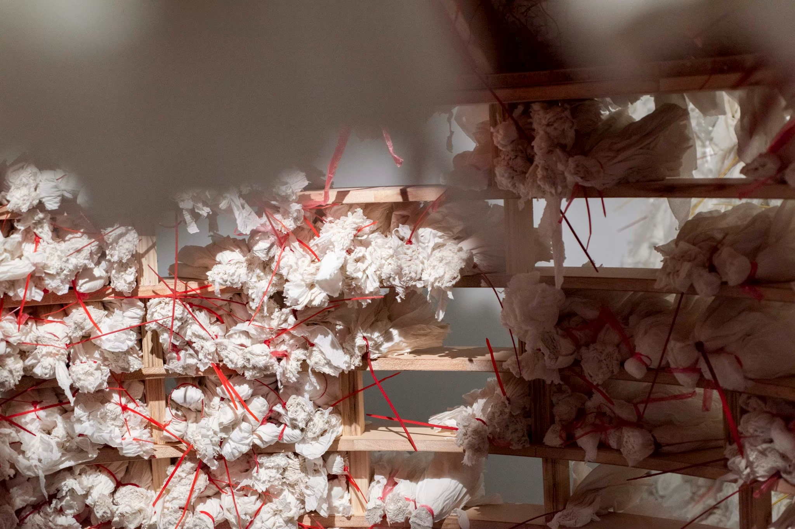
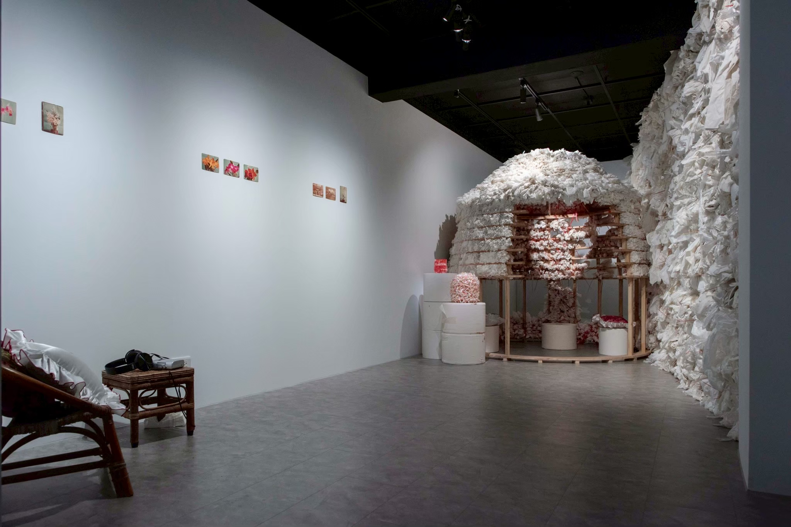
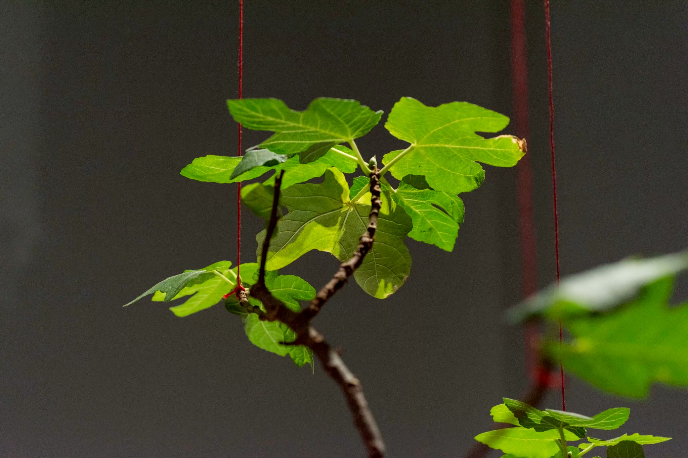
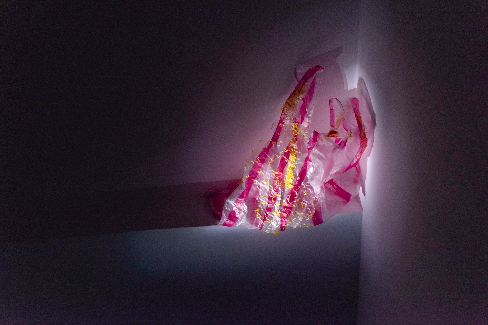
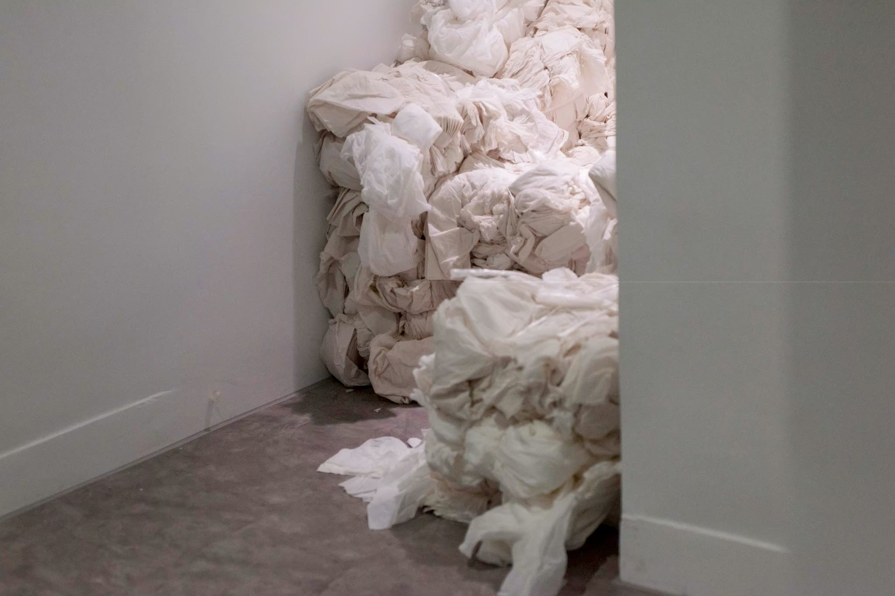
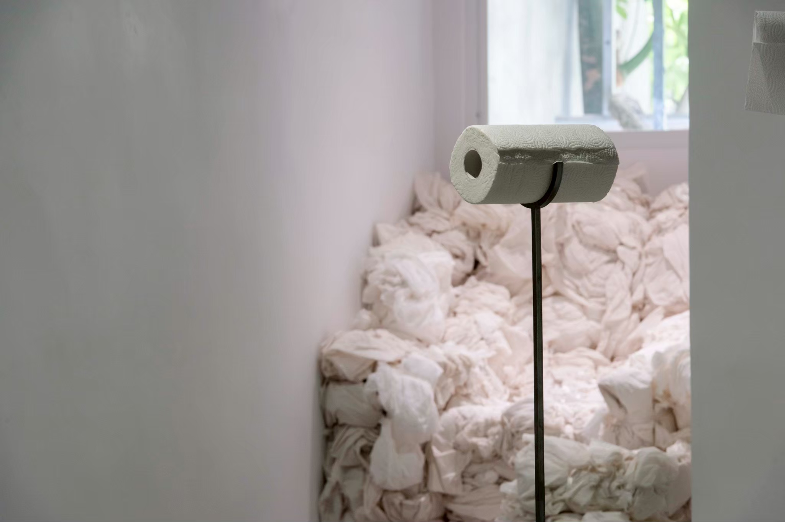